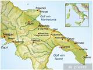
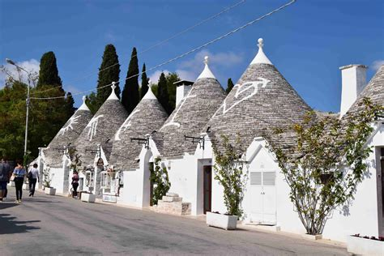
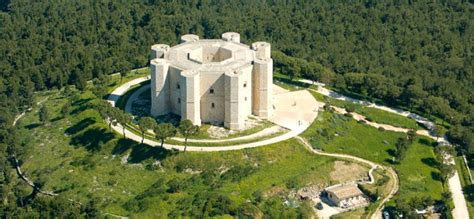
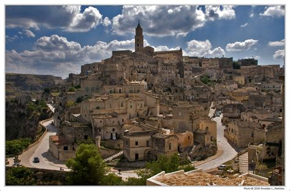
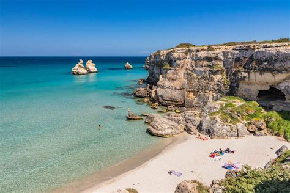

Przewodnik turystyczny
- Zwiedzanie Pugli to prawdziwa uczta dla oczu. Odkryj urok tradycyjnych wiosek, zabytkowych miasteczek i malowniczych wybrzeży. Znajdziesz tu takie perełki jak Alberobello, gdzie można podziwiać unikalne domy trulli, czy Lecce - miasto baroku, które zachwyca swoją architekturą. Nie zapomnij również o wizycie w pięknych parkach narodowych, gdzie można cieszyć się niepowtarzalnym krajobrazem.
Mapa regionu Apulia
Najlepsze miejsca do zobaczenia i zwiedzenia
- Alberobello
- Bari
- Castel del Monte
- Matera
- Polignano a Mare
- Trani
Atrakcje regionu Apulia
Alberobello
Alberobello to niewielkie miasteczko z doskonale zachowanymi kamiennymi domami w kształcie stożków. Zostało wpisane na listę Światowego Dziedzictwa UNESCO.
Castel del Monte
Castel del Monte to piękny, dobrze zachowany średniowieczny zamek położony na wzgórzu. Został wpisany na listę Światowego Dziedzictwa UNESCO.
Matera
Matera to miasto położone w regionie Basilicata, sąsiadującym z Apulią, lecz z uwagi na bardzo interesującą architekturą często odwiedzane przy okazji wizyty w Bari. Znajdują się tam położone jedno obok drugiego jaskinie, wiele z których zostało przekształconych na mieszkania i bary. Ze względu na swoje unikatowe położenie i zabudowę, wykorzystywane było juz niejednokrotnie jako plan filmowy przy produkcjach takich jak Pasja Mela Gibsona, czy jednego z filmów o Jamesie Bondzie
Plaże regionu Apulia
Plaże Apulii są bardzo malownicze ze względu na sąsiedztwo morza i sakał tworzących liczne zatoki i jaskinie, które można odwiedzać przemieszczając się łódką czy kajakiem.